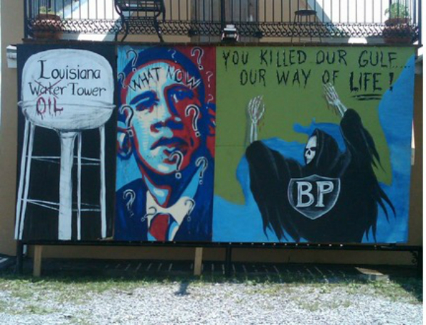
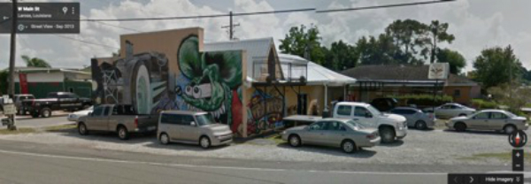
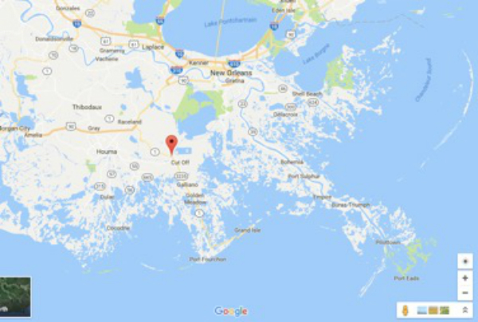
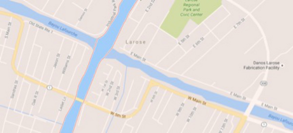

Larose Case Study
Figure 1. Video revealing the virtual geosemiotic method for the Obama What Now? mural in Larose, Louisiana. This video previews the potential of using street level imagery in coordination with other geotagged images from online news and social media platforms.
For nearly three months after the Deep Horizon oil rig exploded, oil rushed onto the shores of the Gulf (Eliott). In the wake of this disaster, two tattoo artists in the coastal town of Larose, Louisiana began to paint murals to voice their frustration (Pitre). Bobby Pitre and Eric Guidry made the front outside wall of their tattoo shop their own art gallery. A few months after the initial explosion, as the economic, social, and political repercussions continued to plague coastal communities, Pitre and Guidy painted three side-by-side murals. The mural on the left features a white tower on a black backdrop. The text on the tower reads “Louisiana Water Tower.” The word water has been crossed out and replaced with the word oil in red dripping paint. On the right, a mural with a green outline of the Southeastern United States is in the background. In the foreground, a skeletal figure draped in a black robe leans their hands over the Gulf Coast and looks back at the audience. “BP” is written on the figure’s robe and the sentence “You Killed Our Gulf/Our Way of Life” is written at the top of the mural.
Figure 2. Guidry and Pitre’s murals. Photograph by McClelland.
The middle mural is a play on Shepard Fairy’s Obama Hope image. Guidry explained this remix of Obama Hope like this: I painted President Obama's campaign portrait and made it into my own creation. Instead of the words "hope" or "change", I inserted "WHAT NOW?" across his forehead with his entire being surronded [sic] by question marks. (Pitre). The mural features the same three quarters profiled bust of President Obama as Fairey’s image. The color scheme is very similar with a wash of reds, whites and blues over Obama’s face and the background. Obama is adorned the same blazer, shirt and tie in the mural and Fairey’s original image. There are, however, a few notable differences.
First, Obama is not wearing a lapel pin with his signature campaign logo. Second, because the mural was painted by hand instead of traced, some of the face proportions are a little skewed. In this mural representation of Obama, his nose and eyes are a little bit bigger, his face is a bit leaner and longer, and his eyes darker. Despite these differences, the depiction still clearly evokes an image of the president and Fairey’s original Obama Hope image. Third, and perhaps most striking, the word hope has been removed from the original image and replaced with the words “what now” and 13 question marks have been painted on and around Obama’s face. By moving text from the bottom of the image to the top, according to Kress and van Leeuwen’s (Reading Images; Multimodality) typology, the muralists change the textual message from the real position to the ideal position. The initial Obama hope image from Fairey positioned the word “hope” in the real position, perhaps in an attempt to portray this message of hope as realistic to voters. Hope is no longer real for the gulf coast residents that have been devastated by the BP oil spill. Instead, ideally, they want action from the federal government to restore their way of life. Thus, the text changes both wording and placement to reflect that desire. This textual move perhaps mirrors Guidry’s internal motivation for the piece explained by him as “I now see our president in a different light, he is not the same person I rooted for in the presidential election” (Pitre). From Guidry’s perspective, Obama can no longer be decorated with the message of real hope. Guidry’s disappointment in his response to the Gulf Coast crisis is reflected in the textual change and spatial move of the words in the remix of Obama hope.
Figure 3. Southern Sting Tattoo Parlor, Larose, Louisiana.
Scollon and Scollon explain “decontextualized semiotics makes no reference to the place in the world where the signs appear within the picture, image, or textual frame” (p. 146). Fairey’s Obama hope image, in its original version, makes no reference to the world around it, and thus its meaning is relatively consistent across contexts. However, both the placement and changes made to the image in the Louisiana mural creates a localized semiotics system and meaning for the sign. If the image of Obama emblazoned with “what now” across his forehead was placed on a tattoo shop in Chicago around the same time, the sign would not be referencing the BP oil spill. The mural’s place on the wall, in between two other murals with political commentary on the oil, and its geographic location in a small coastal town heavily impacted by the crisis, help construct the meaning of the sign.
Figure 4. Screen grab of Google Maps representation of the area surrounding Larose, LA.
Figure 5. Screen grab of Google Maps representation of the intersection of the Bayou Lafourche and Gulf Intracostal Waterway.
Pitre’s tattoo shop is located at the corner of 6th and Main in Larose, Louisiana. Google street view allows us to explore the area more thoroughly. The shop is located just off the Bayou Lafourche, which connects to the Gulf of Mexico. At Port Fourchon, where the Bayou meets the gulf, fishing for shrimp and oysters was a thriving industry. In the immediate aftermath of the Horizon explosion, fishing was shutdown completely. Five years later, those industries had still not completely recovered (Elliot). Guidry explains,
It might not seem like any regular day tattoo artist would be affected by this oil spill, but the truth is we are being affected the same as everyone else. We depend on our shrimpers, crabbers, oyster men, oil workers and anyone else who works in these fields to make the money that supplies us a living from this art form.” (Pitre).
The tattoo shop was geographically, economically and socially implicated in the oil crisis of 2010 and their mural was as an addition to the local semiotic system.
Tattoo shops operate as an alternative, periphery space and Pitre’s shop is no different. Google street view’s history function reveals that from 2009 to 2013 the shop was adorned with different murals around the outside walls of the building. Although tattoo shops are often on a periphery of social life, they are not always explicitly political in the sense of the electoral process. However, in the case of Pitre’s shop, a political space was produced by the act of placing murals on the shop’s outside walls. Where alternative culture was once understood as the provenance of the left, in 2010, with Barack Obama in office, alternatives started brewing from other political hues. The Tea Party, and later the alt-right would lay claim to being counter culture movements. Although Obama What Now? cannot be directly associated with these movements, the semiotic aggregate of the Southern Sting skews to the political right.
The distorted form of Obama Hope on the outside of the Tattoo shop generates an encounter between the urbane President Obama and the toxicity of the oil spill. Larose sits on the end of the road to the Gulf. The tattoo shop qualifies the space by expressing the nightmare of the spill and the inadequacy of hope in its wake. This particular site is the end of the road for hope.
Henri Lefebvre, when speaking of spatial architectonics, talks of “an intelligence of the body” (p. 174) that co-constructs geometry with the available material elements of the space that the body occupies. One might think of a spider constructing a web using different anchorage points and its own body to realize the possibilities of its own occupation. Using the spider example, spatial architectonics appears to be a concept of physics and biology, but one can extend the notion to consider social relations and politics. Indeed, to think of space in any terms other than social relations, is to consider space as merely surface, a cardinal mistake for the geographer Doreen Massey. The mural, positioned as it is, not only expresses a mood or feeling, it also territorializes a relationship and leaves a gesture, trace, and mark of the political. In other words, the tattoo shop is politics on the periphery, it is a testament to bodies co-constructing their own local geometries, literally using their skin as canvas, and extending those sensibilities onto the physical material walls of Larose, Louisiana. Pitre’s shop offers an answer to the question: where am I? Where the answer exceeds the coordinates of a surface and provides an image that orients the individual to the politics of the Gulf.
The mural tells us that very little is being done by the federal government, despite the catastrophic scope of the spill. The mural also tells us that the people of Larose have very little means to communicate to political power what they need. The temptation for the critic doing digital visual studies is to be content with Obama What Now? as an act of resistance to contamination and federal inaction. But acts of resistance contain their own cross references and political valences that skew one way or another. In the case of the Southern Sting the references begin to spiral into territory that is not simply ecofriendly in its political disposition. As demonstrated in the Larose video above, local meaning is found in the iconography of the Confederacy and twentieth century German militarism. The crisis of Deepwater Horizon was an opportunity to redraw a relationship with the metropolitan center, which happened to be occupied by a centrist liberal. The dialogic effect of these local references amounts to an embrace of anti-liberalism with the question What Now? posed to arguably the United States’ greatest liberal figure by a tattoo artist who just happens to wear a German World War One battle helmet from time to time (see Larose video).
Next Section